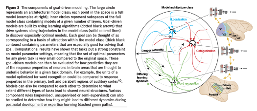
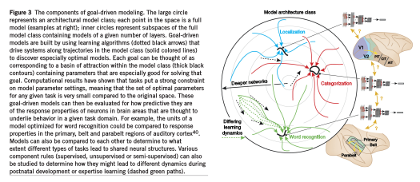

ディープラーニングの心理学的解釈 (心理学特講IIIA)¶
工事中
デモ¶
CNN の特徴¶
-
次の 7 つを上げることができます 。
-
非線形活性化関数 (nonlinear activation functions)
- 畳込み演算 (convolutional operation)
- プーリング処理 (pooling)
- データ拡張 (data augmentation)
- バッチ正規化 (batch normalization)
- ショートカット(shortcut)
- GPU の使用
上記 7 つの特徴を説明するのは専門的になりすぎるので省略します。一つだけ説明するとすれば最後の GPU とは高解像度でしかも処理速度を必要とするパソコンゲームで用いられるグラフィックボードのことです。 詳細な画像を高速に画面に表示する必要から開発されたグラフィックボードですが，大規模なニュールネットワークの計算でも用いられる数学が同じです。 そのため，ゲーム用に開発されたグラフィックボードがニューラルネットワークにも用いられるようになりました。
- Sutton's blog bitter lesson , その和訳
生理学¶
Hubel and Wiesel (1969)¶
Blackmore and Cooper (1970)¶


セルフリッジ Selfridge のパンデモニウム pandemonium モデル¶

セルフリッジ (1958) ``Mechanisation of Thought Processes'' より

セルフリッジ (1958) ``Mechanisation of Thought Processes'' より


セルフリッジ (1958) ``Mechanisation of Thought Processes'' より
生理学，視覚心理学との対応¶
- Julesz
- Julesz (1981) Textons, the elements of texture perception, and their interactions, Nature
 Julesz (1981) Fig. 2 より
Julesz (1981) Fig. 2 より
- Marr
- Computational approach: Vision (1908)
- Poggio
- Poggio, Torre, and Koch (1985) Computational vision and regularization theory
Psycholosophical consideration¶
- Epistemology 思念的，観念的
- Empirical Episitemology 実証的 = psychology
- Constructive epipstemology 構成論的 = computer vision, neural networks
生理学，視覚心理学との対応¶
- Julesz
- Julesz (1981) Textons, the elements of texture perception, and their interactions, Nature
Julesz (1981) Fig. 2 より
- Marr
- Computational approach: Vision (1908)
- Poggio
- Poggio, Torre, and Koch (1985) Computational vision and regularization theory
一つのアルゴリズム仮説 One algorithm hypothesis¶
- Metin and Frost (1989) Visual responses of neurons in somatosensory cortex of hamsters with experimentally induced retinal projections to somatosensory thalamus
- Roe et al. (1992) Visual Projections Routed to the Auditory Pathway in Ferrets: Receptive Fields of Visual Neurons in Primary Auditory Cortex
生理学との対応 (Hubel and Wiesel のネコとサル, Blackmore のネコ, ヴァンエッセン)¶
- 層間の結合の仕方, アーキテクチャ
- forward/backward 役割，機能，実現方法
- 側抑制 lateral inhibition (これについては多層化して回避できる可能性あり)
-
shape from X は正しかったのか？ ただし発達心理学におけるシェイプバアスは言語発達において重要な意味を持つはず。だからと言って乳幼児はそのように強制(脅迫？)，矯正されて育つわけではないだろう。
- Ritter (2017) Cognitive Psychology for Deep Neural Networks: A Shape Bias Case Study
- Landau, Smith, Jones (1992) Syntactic Context and the Shape Bias in Childrens and Adults Lexical Learning
-
Yamins (2016) Using goal-driven deep learning models to understand sensory cortex
-
Julez のアプローチは視覚研究者 Haar, SIFT, DoG などのアルゴリズム開発者と対応
- Poggio (1985) Computational Vision and Regularization Theory

 



Zeiller 2012 より
畳込みニューラルネット(CNN)とは何か¶
本節では深層学習，特に CNN と呼ばれるニューラルネットワークについて解説します。
最初に画像処理の概略を述べる CNN が，それまで主流であった従来の手法の性能を凌駕したことはすでに述べました。 CNN の特徴の一つに エンドツーエンド と呼ばれる考え方があります。 エンドツーエンドとは，従来手法によるパターン認識システムでは，専門家による手の込んだ詳細な作り込みを必要としていたことと異なり，面倒な作り込みをせずとも性能が向上したことを指します。
エンドツーエンドなニューラルネットワークにより，次のことが実現しました。
- ニューラルネットワークの層ごとに，特徴抽出が行われ，抽出された特徴がより高次の層へと伝達される
- ニューラルネットワークの各層では，比較的単純な特徴から次第に複雑な特徴へと段階的に変化する
- 高次層にみられる特徴は低次層の特徴より大域的，普遍的である
- 高次層のニューロンは，低次層で抽出された特徴を共有している
このことを簡単に説明してみます。
我々人間は，外界を認識するために必要な計算を，生物種としての発生の過程と，個人の発達を通しての経験に基づく認識システムを保持していると見ることができます。 従って我々の視覚認識には化石時代に始まる光の受容器としての眼の進化の歴史と発達を通じた個人の視覚経験が反映された結果でもあります。 人工知能の目標は，この複雑な特徴検出過程をどうやったらコンピュータが獲得できるかということでもあります。 外界を認識するために今日まで考案されてきたモデル（例えば，ニューラルネットワークサポートベクターマシンなどは）は複雑です。 ですがモデルを訓練するための学習方法はそれほど難しくありません。 この意味で画像認識課題が正しく動作するためのポイントは，認識システムが問題を解く事が可能なほど複雑であるかどうかではなく，十分に複雑が視覚環境，すなわち画像認識の場合，外部の艦橋を反映するために十分な量の像データを容易すことができるか否かにあります。 今日の CNN による画像認識性能の向上は，簡単な計算方法を用いて複雑な外部環境に適応できる認識システムを構築する方法が確立したからであると言うことが可能です。
下図 に画像処理の例を挙げました。

では入力画像がネコであるか否かを判断する画像認識であるとしました。 我々はネコの画像を瞬時に判断できます。ですが画像認識の難しさは，入力画像が上図 に示されているように入力信号の数字の集まりでしか無いことです。 このようなデータを何度も経験することでネコを識別できるようにする必要があります。 コンピュータに入力される画像は数字の塊に過ぎません。
状況ごとにとるべき操作を命令として逐一コンピュータに与える指示する手順の集まりのことをコンピュータプログラムと呼びます。人間がコンピュータに与えることができる操作や命令によって画像認識システムを作る場合，命令そのものが膨大になったり，そもそも説明することが難しかったりします。 例を挙げれば，お母さんを思い浮かべてくださいと言われれば誰でも，それぞれ異なるイメージであれ思い浮かべることができます。また，提示された画像が自分の母親のものであるか，別の女性であるかの判断は人間であれば簡単です。ところがコンピュータには難しい課題となります。 加えて母親の特徴をコンピュータに理解できる命令としてプログラムすることも難しい課題です。つまり自分の母親の特徴を曖昧な言葉でなく明確に説明するとなるととても難しい課題となります。 というのは，女性の顔写真であればどの写真も似ていると言えるからです。顔の造形や輪郭，髪の位置などはどの画像も類似していることでしょう。ところがコンピュータにはこの似ている，似ていいないの区別が難しいのです。
加えて，同一ネコの画像であっても，被写体の向き視線の方向や光源の位置や撮影条件が異なれば画像としては異なります。 下図に示したように入力画像の中の特定の値だけを調べてみても，入力画像がネコであ る，そうではないかを判断することは難しい課題になります。

現在の画像認識では，特定の画素の情報に依存せずに，入力画像が持っている特徴 をとらえるように設計されます。たとえば，ネコを認識するために必要ことは，ネ コに特徴的な「ネコ目」や「ネコ足」を検出することであると考えます。入力画像 から，ネコの持つ特徴を抽出することができれば，それらの特徴を持っている入力 画像はネコであると判断して良いことになります(下図 )。

下図 は，音声認識と画像認識の両分野において CNN が用いられる以前の従来手法 をまとめたものです。


コンピュータにはネコ目特徴検出器，ネコ足特徴検出器は備わっていません。そこで画像認識研究では，画像の統計的性質に基づいて特徴検出器を算出する方法を探す努力が行われてきました。 しかし，コンピュータにネコ目特徴やネコ足特徴を教えるは容易なことではありません。 このことは画像処理の分野だけに限りません，音声認識でも言語情報処理でもそれぞれの特徴器を一つ一つ定義し，チューニングするのは時間がかかり，専門的な知識も必要で困難な作業でした。
まとめると，1950 年代後半以来:固定的，手工芸的特徴抽出器と学習可能な分類器を用いた認識システムを作ることが試みられてきたといえます。 これに対して CNN が主流となった現在はエンドツーエンドで学習可能な特徴抽出器を多数重ね合わせることで性能が向上しました。
夢のような話が続きましたが，本節の最後に逆に CNN は簡単に騙すことができる例 を挙げておきます。

図では，左の画像が入力画像で，CNN は確信度 57.7パーセントでパンダである認識しました。 ところがこの画像に 0.007だけ意味のない画像(図中央)を加えるた画像(図右)を CNN は 99.3パーセントの確信度でテナガザル (gibbon)と判断しました。この例はここでは詳しく触れることはしませんが 敵対的学習と呼ぶ訓練手法を説明する際に用いられた例です 。
この例からも分かることは以下のようにまとめられるでしょう。 すなわち，人間の脳を模したニューラルネットワークである CNN が大規模化像認識チャレンジにおいて人間の認識性能を越えたと報道されました。 ですが，人間の視覚認識を完全に実現したと考えるのは早計で，解くべき課題は未だ多数あるということです。 この状況は，音声認識や言語情報処理でも同様であると言えます。
- ドロップアウト，データ拡張，各種正規化: cnn.md
- 有名なモデル LeNet，Alex Net，Inception，VGG，ResNet
- R-CNN，ハイウェイネット，YOLO，SSD
- セマンティックセグメンテーション
- 転移学習，事前学習，ファインチューニング
CNN の詳細¶
通常のニューラルネットワークでは，直下層のニューロンとそのすぐ上の層の全ニューロンと結合を有する。一方 CNN ではその結合が部分的である。 各ニューロンは多入力一出力の信号変換機とみなすことができ，活性化関数に非線形な関数を用いる点は通常のニューラルネットワークと同様。
画像処理を考える場合，典型的には一枚の入力静止画画像は 3 次元データである。次元は幅w，高さh，奥行きd であり，入力画像では奥行きが３次元，すなわち赤緑青の三原色。出力ニューロンへの入力は局所結合から小領域に限局される。
1. CNNの構成¶
CNN は以下のいずれかの層から構成される：
- 畳込み層
- プーリング層
- 完全結合層（通常のニューラルネットワークと正確に同じもの，CNN では最終 1 層または最終 1,2 層に用いる）
入力信号はパラメータの値が異なる活性化関数によって非線形変換される。 畳込み層とプーリング層と複数積み重ねることで多層化を実現し，深層ニューラルネットワークとなる。
例：¶
- 画像データを出力信号へ変換
- 各層は別々の役割（畳込み，全結合，ReLU, プーリング）
- 入力信号は 3 次元データ，出力信号も 3 次元データ
- 学習すべきパラメータを持つ層は畳込み層，全結合層
- 学習すべきパラメータを持たない層は ReLU 層とプーリング層
- ハイパーパラメータを持つ層は畳込み層, 全結合層, プーリング層
- ハイパーパラメータを持たない層は ReLU層

- 入力層[32x32x3]: 信号は画像の生データ（画素値）幅w(32)，高さh(32)、色チャネル3(R, G, B)
- 畳込み層: 下位層の限局された小領域のニューロンの出力の荷重付き総和を計算(内積，ドット積）。12個のフィルタを使用すると[32x32x12]となる。
- ReLU層の活性化関数は ReLU (Recutified Linear Unit) \(max(0,x)\)
- プーリング層: 空間次元（幅,高さ）に沿ってダウンサンプリングを実行。[16x16x12]のようになる。
- 全結合層はクラスに属する確率を計算: 10 の数字のそれぞれが CIFAR-10 の 10 カテゴリーの分類確率に対応するサイズ[1x1x10]に変換。通常のニューラルネットワーク同様、全結合層のニューロンは前層の全ニューロンと結合する。
CNN は元画像（入力層）から分類確率（出力層）へ変換。学習すべきパラメータを持つ層（畳込み層，全結合層）とパラメータを持たない層（ReLU層）が存在。畳込み層と全結合層のパラメータは勾配降下法で訓練
2. 畳込層¶

ネオコグニトロンの概略図(Fukushima, 1979)

LeNet5 (LeCun, 1998)

アレックスネット(Krizensky et al. 2012)
 アレックスネットの出力例(Krizensky et al. 2012)
アレックスネットの出力例(Krizensky et al. 2012)
- 畳込み層のパラメータは学習可能なフィルタの組
- 全フィルタは空間的に（幅と高さに沿って）小さくなる
- フィルタは入力信号の深さと同一
- 第1層のフィルタサイズは例えば 5×5×3（5 画素分の幅，高さ，と深さ 3（３原色の色チャンネル）
- 各層の順方向の計算は入力信号の幅と高さに沿って各フィルタを水平または垂直方向へスライド
- フィルタの各値と入力信号の特定の位置の信号との内積（ドット積）。
- 入力信号に沿って水平，垂直方向にフィルタをスライド
- 各空間位置でフィルタの応答を定める 2 次元の活性化地図が生成される
- 学習の結果獲得されるフィルタの形状には、方位検出器，色ブロッブ，生理学的には視覚野のニューロンの応答特性に類似
- 上位層のフィルタには複雑な視覚パタンに対応する表象が獲得される
- 各畳込み層全体では学習すべき入力信号をすべて網羅するフィルタの集合が形成される
- 各フィルタは相異なる 2 次元の活性化地図を形成
- 各フィルタの応答特性とみなすことが可能な活性化地図
- フィルタの奥行き次元に沿って荷重総和を計算し、出力信号を生成
-
ビオラ，ジョーンズアルゴリズム (2001)，富士フィルムによる実装は2006年頃
局所結合: 画像のような高次元の入力を処理する場合，下位層の全ニューロンと上位層の全ニューロンとを接続することは 責任割当問題回避 の観点からもパラメータ数の増加は現実的ではない。
代わりに各ニューロンを入力ボリュームのローカル領域のみに接続。空間的領域はニューロンの 受容野 と呼ばれるハイパーパラメータ（フィルタサイズとも言う）。深さ次元に沿った接続性＝入力層の深さ次元。
空間次元（幅と高さ）と深さ次元をどのように扱うかにより，この非対称性を再び強調することが重要です。ニューロン間の結合は空間次元（幅と高さ）にそって限局的。入力次元の深さ全体を常にカバーする。
-
例1: 入力層のサイズが[32x32x3]（RGB CIFAR-10画像データセットなど）であれば受容野（フィルタサイズ）が 5x5 とすれば，畳込み層内の各ニューロンは入力層の [5x5x3] 小領域への結合係数を持つ。各小領域毎に 5x5x3=75 の重み係数と 1 つのバイアス項が必要である。深さ次元に沿った上層のニューロンから下位層のニューロンへの結合は下位層の深さ(色チャンネル数)と等しく 3 である。
-
例2: 入力ボリュームのサイズが[16x16x20]であるとすると 3x3 の受容野サイズで畳込層の全ニューロンの合計は 3x3x20=180 接続。接続性は空間的に局在する（3x3）が，入力深度（20）に沿っては完全結合
空間配置: 出力層ニューロンの数と配置については 3 つのハイパーパラメータで出力ニューロン数が定まる。
- 深さ数(フィルタ数)
- ストライド幅
-
ゼロパディング
-
出力層ニューロン数のことを出力層の 深さ 数と呼ぶハイパーパラメータである。深さ数とはフィルタ数（カーネル数）とも呼ばれる。第 1 畳込み層が生画像であれば，奥行き次元を構成する各ニューロンによって種々の方位を持つ線分(エッジ検出細胞)や色ブロッブのような特徴表現を獲得可能となる。入力の同じ領域を 深さ列 とするニューロン集団を ファイバ ともいう。
-
フィルタを上下左右にずらす幅を ストライド幅 と呼ぶ。ストライド幅が 1 ならフィルタを 1 画素ずつ移動することを意味する。ストライドが 2ならフィルタは一度に 2 画素ずつジャンプさせる。ストライド幅が大きければ入力信号のサンプリング間隔が大きく広がることを意味する。ストライド幅が大きくなれば上位層のニューロン数は減少する。
-
入力の境界上の値をゼロで埋め込むことがある。これを ゼロパディング という。ゼロパディングの量はハイパーパラメータである。ゼロパディングにより出力層ニューロンの数を制御できる。下位層の空間情報を正確に保存するには入力と出力の幅，高さは同じである必要がある。
入力層のニューロン数を\(W\)，上位にある畳込み層のニューロン数を\(F\)，とすれば出力層に必要なニューロン数\(S\)は，周辺のゼロパディング を\(P\)とすれば \((W-F+2P)/S+1\) で算出できる。たとえば下図でストライド 1 とゼロパディング 0 であれば入力 7x7 でフィルタサイズが 3x3 であれば 5x5(=S=(7-3+2x0)/1+1=5) の出力である。ストライド 2 ならば 3x3=(S=(7-3+2x0)/2+1=3) となる。

左図：出力層ニューロン数は (5-3+2)/1+1=5 の出力層ニューロン数となる。ストライド数 S=1 の場合。
右図：s=2，出力層ニューロン数 (5-3+2)/2+1=3 となる。ストライド S=3 ならばボリューム全体にきちんと収まらない場合もでてくる。数式で表現すれば \\((5-3+2)=4\\) は 3 で割り切れないので、整数の値として一意に決定はできない。
ニューロン結合係数は（右端に示されている）[1,0,-1]でありバイアスはゼロ。この重みはすべての黄色ニューロンで共有される。
ゼロパディング: 上例では入力次元が 5，出力次元が 5 であった。これは受容野が 3 でゼロ埋め込みを1としたためである。ゼロ埋め込みが使用されていない場合、出力ボリュームは、どれだけの数のニューロンが元の入力に「フィット」するのであろうかという理由で、空間次元がわずか3であったであろう。ストライドが \(S=1\) のとき、ゼロ埋め込みを \(P=(F-1)/2\) に設定すると、入力ボリュームと出力ボリュームが空間的に同じサイズになる。このようにゼロパディングを使用することは一般的である。CNNについて詳しく説明している完全な理由について説明する。
ストライドの制約: 空間配置ハイパーパラメータには相互の制約があることに注意。たとえば入力に\(W=10\)というサイズがあり、ゼロパディングは\(P=0\) ではなく、フィルタサイズは\(F=3\), \((W-F+2P)/S+1=(10-3+0)/2+1=4.5\)よりストライド \(S=2\) を使用することは不可能である。すなわち整数ではなくニューロンが入力にわたってきれいにかつ対称的に "適合" しないことを示す。
AlexNet の論文では，第一畳込層は受容野サイズ \(F=11\)，ストライド\(S=4\)，ゼロパディングなし\(P=0\)。
畳込層 \(K=96\) の深さ \((227-11)/4+1=55\)。畳込層の出力サイズは [55x55x96]。55x55x96 ニューロンは入力領域 [11x11x3] と連結。全深度列 96 個のニューロンは同じ入力領域[11×11×3]に繋がる。論文中には(224-11)/4+1 となっている。パディングについての記載はない。
パラメータ共有 パラメータ数を制御するために畳み込み層で使用される。上記の実世界の例を使用すると、最初の畳故意層には 55x55x96=290,400のニューロンがあり、それぞれ 11x11x3=363 の重みと1のバイアスがある。これにより CNN 単独の第 1 層に最大 290400x364=105,705,600 のパラメータが追加される。
パラメータ共有 により学習すべきパラメータ数が減少する。 例えば [55x55x96] のフィルタでは深さ次元は 96 個のニューロンで，各深さで同じ結合係数を使うことにすれば ユニークな結合係数は計 96x11x11x3=34,848 となるので総パラメータ数は 34,944 となる(バイアス項 +96)。各深さで全ニューロン(55x55)は同じパラメータを使用する。逆伝播での学習では，全ニューロンの全結合係数の勾配を計算する必要がある。各勾配は各深さごとに加算され 1 つの深さあたり一つの結合係数集合を用いる。
ある深さの全ニューロンが同じ重み係数ベクトルを共有する場合，畳込み層の順方向パスは各深さスライス内で入力ボリュームとのニューロンの重みの 畳み込み として計算できることに注意。結合荷重係数集合のことを フィルタ または カーネル と呼ぶ。入力信号との間で畳込み演算を行うこととなる。

3. プーリング層¶
CNN では，連続する畳込み層間にプーリング層を挿入するのが一般的。プーリング層の役割は，空間次元の大きさに減少させることである。パラメータ，すなわち計算量を減らし，過学習を制御できる。プーリング層は入力の各深さ毎に独立して動作する。最大値のみをとり他の値を捨てることを マックスプーリング と呼ぶ。サイズが 2x2 のフィルタによるプーリング層では，入力の深さごとに つのダウンサンプルを適用し、幅と高さに沿って2ずつ増やして75％の情報を破棄する。この場合 4 つの数値のうち最大値を採用することになる。


4. 全結合層¶
全結合層のニューロンは、通常のニューラルネットワークと同じ
前層の全ニューロンと結合を持つ
5. CNN アーキテクチャ¶
- 畳込層
- プーリング層
- 全結合層
層は以上 3 種類が一般的。
6. CNN の層構造¶
入力層 [[畳込層 ReLU] プーリング(?)] M [全結合層 ReLU] K 全結合層
最近のトレンドとしては大きなフィルタより小さなフィルタが好まれる傾向にある。
[3x3] が好まれる理由はど真ん中がある奇関数を暗黙に仮定しているためだと思われる（浅川の妄想）。
その代わり多段にすれば [3x3] が２層で ［5x5]，３層で[7x7]の受容野を形成できるから受容野の広さを層の深さとして実装しているとも解釈できる。１層で[7x7]の受容野より３層で[7x7]の受容野を実現した方が the simpler, the better の原則に沿っているとも（文学的）解釈が可能である（またしても浅川妄想）。
バックプロパゲーションの計算時に広い受容野を作るより層を分けた方が GPU のメモリに乗せやすいと言う計算上の利点もある。
活性化関数 activation functions¶
import numpy as np import matplotlib.pyplot as plt %matplotlib inline ## [Original](https://github.com/alrojo/tensorflow-tutorial/\ ## blob/master/lab1_FFN/lab1_FFN.ipynb) # PLOT OF DIFFERENT OUTPUT USNITS x = np.linspace(-6, 6, 100) relu = lambda x: np.maximum(0, x) leaky_relu = lambda x: np.maximum(0, x) + 0.1*np.minimum(0, x) elu = lambda x: (x > 0)*x + (1 - (x > 0))*(np.exp(x) - 1) sigmoid = lambda x: (1+np.exp(-x))**(-1) def softmax(w, t = 1.0): e = np.exp(w) dist = e / np.sum(e) return dist x_softmax = softmax(x) plt.figure(figsize=(6,6)) plt.plot(x, relu(x), label='ReLU', lw=2) plt.plot(x, leaky_relu(x), label='Leaky ReLU',lw=2) plt.plot(x, elu(x), label='Elu', lw=2) plt.plot(x, sigmoid(x), label='Sigmoid',lw=2) plt.legend(loc=2, fontsize=16) plt.title('Non-linearities', fontsize=20) plt.ylim([-2, 5]) plt.xlim([-6, 6]) # softmax # assert that all class probablities sum to one print(np.sum(x_softmax)) assert abs(1.0 - x_softmax.sum()) < 1e-8
デモファイル 2019komazawa_activation_functions.ipynb

アレックスネットの収束の様子
TensorFlow HUB¶
インセプション Inception，残渣ネット ResNet，領域 R-CNN (Regional Convolutional Neural Networks)¶
- what and where routes
- 心理学的対応物(？)
- /2015documents/2014Cadieu_Deep_Neural_Networks_Rival_the_Representation_of_Primate_IT_Cortex_for_Core_Visual_Object_Recognition.pdf
- /2019documents/2019NasrViswanathanNieder_Number_detectors_spontaneously_emerge_in_a_deep_neural_network_designed_for_visual_object_recognition.pdf
- /2018documents/2018Marcus_Deep_Learning_A_Critical_Appraisal.pdf
- 転移学習
Notebooks¶
- colab/text_classification_with_tf_hub_on_kaggle.ipynb Shows how to solve a problem on Kaggle with TF-Hub.
- colab/semantic_similarity_with_tf_hub_universal_encoder.ipynb Explores text semantic similarity with the Universal Encoder Module.
- colab/tf_hub_generative_image_module.ipynb Explores a generative image module.
- colab/action_recognition_with_tf_hub.ipynb Explores action recognition from video.
- colab/tf_hub_delf_module.ipynb Exemplifies use of the DELF Module for landmark recognition and matching.
- colab/object_detection.ipynb Explores object detection with the use of the Faster R-CNN module trained on Open Images v4.
-
The Complete Beginner’s Guide to Deep Learning: Convolutional Neural Networks and Image Classification, Anne Bonner Feb. 02
-
畳込みニューラルネットワーク (Convlutional Neural Networks:CNN) とは画像認識におけるゲームチェンジャー(以後，画像認識，ビデオ分類，自動運転，ドローン，ゲームなどへの応用多数)
- イメージネット画像コンテストでは，分類 (classification) 課題と位置 (locallization) 課題とからなる。
- コンテストは 2010 年から Li Fei-Fei さん中心となって AMT で画像のアノテーションを行って 画像を2012 年の優勝チームが CNN を使った。通称アレックスネット
- スタンフォード大学の授業 CS231n: Convolutional Neural Networks for Visual Recognition. スライド](http://cs231n.stanford.edu/slides/2019/cs231n_2019_lecture05.pdf)
さらなる情報¶
- Math? Introduction to Convolutional Neural Networks by Jianxin Wu
- C.-C. Jay Kuo Understanding Convolutional Neural Networks With a Mathematical Model.
- the absolute basics of activation functions, you can find that here
- [Artificial neural networks? You can learn about them here
- video by Geoffrey Hinton on the softmax function
- A Friendly Introduction to Cross Entropy Loss by Rob DiPietro
- How to Implement a Neural Network Intermezzo 2 by Peter Roelants
-
Introduction to Convolutional Neural Networks by Jianxin Wu
- Yann LeCun’s original article, Gradient-Based Learning Applied to Document Recognition
- The Nine Deep Learning Papers You Need to Know About (Understanding CNNs part 3) by Adit Deshpande
次元削減，次元圧縮 dimensionality reduction¶
Van der Maaten のページによれば次元圧縮 dimensionality reduction には 34 種類の方法があります。PCA, FA, MDS などが心理学では伝統的無批判に使われてきました。多くの心理学者は因子分析を好む 因子分析偏愛者，因子分析フェチ，factor analysis-pheria ようですが，そのことを支持する理論的根拠は存在しません
{kind=link}
PCA¶
- 主成分分析 PCA: principal component analysis は一番最初に提案された手法で，固有値分解 に基づきます。
- 特に 2 次元へのマッピングは皮質地図 cortial map との対応が考えられるので興味深い
- 条件付き最大値を求める一般的方法でラグランジアン Lagrangian，あるいはラグランジェの未定乗数法 Lagrange multiplier が定義される。
最初は知らない方が良い知らなくても良いラグランジアンの説明¶
- Khan アカデミーのラグランジアンの説明, YouTube
- Constrained optimization introduction, YouTube
- Lagrange multipliers, using tangency to solve constrained optimization, YouTube
- Finishing the intro lagrange multiplier example, YouTube
- The Lagrangian, YouTube
- Meaning of the Lagrange multiplier, YouTube
import numpy as np import math math.gamma(1) math.gamma(2) math.gamma(3)
t-SNE¶
- t-SNE は「ティーズニー」と発音します。
- ちなみに はどのように発音するか知っていますか？あるいは は？
- 心理学者以外では支配的(かも)
- t: **-分布
- S: Stochastic 確率的
- N: Neigbor 隣接(隣人)
- E: Embedding 埋め込み
- PCA, FA, 古典的 MDS (Torgerson) が固有値に基づくのに対して，t-SNE は多次元空間と低次元空有間への写像について確率的な仮定を考え，両者の分布が近づくように学習を行う。
- ここで，2 つの分布の距離を考える。距離の定義には様々が提案がなされているが カルバック=ライブラー ダイバージェンス(あるいは KL 距離)が用いられる。本日の付録参照
- 以下は van der Maaten and Hinton (2008) のオリジナル論文に掲載された結果である

van der Maaten and Hinton (2008) Fig.2
 van der Maaten and Hinton (2008) Fig.3
van der Maaten and Hinton (2008) Fig.3
 t 分布()と標準正規分布の確率密度分布 pdf
t 分布()と標準正規分布の確率密度分布 pdf
- PCA と t-SNE の比較実験
- スチューデントの 分布
分布 の確率密度関数 pdf は以下のとおり: 数学愛好者
数学恐怖症 For all math-phobiaの皆様へ
- おそろしい形をしていますが，ポイントは 関数(がんまかんすう)であり，内部で使われている (「にゅう」と読むギリシャアルファベット)は自由でデータ数 です。
-
はガンマ関数であり， 階乗の連続量への拡張とみなすことができます。
-
最も簡単な場合 を考えれば，上式は以下のようになります。
- さらに , を考慮すれば，以下の式を得ます。
-
は円周率で定数ですから，グラフの形を考えるときには無視して構いません。従って 分布の本質は であることになります。
-
codolab で確認してみましょう。
import numpy as np import math print(math.gamma(1/2)) for i in range(1,11): print(i, math.gamma(i)) math.sqrt(math.pi) == math.gamma(1/2)
- ガンマ関数の概形を描いてみましょう
import matplotlib.pyplot as plt x = np.linspace(0.25,4) y = [math.gamma(xi) for xi in x] plt.plot(x,y)
- つづいて正規分布と -分布とを比較してみましょう
from scipy.stats import norm x = np.linspace(norm.ppf(0.001), norm.ppf(0.999), 100) nu = 1 plt.plot(x, t.pdf(x, nu), 'b-', lw=2, label='t') plt.plot(x, norm.pdf(x), 'r-', lw=2, label='norm') plt.legend()